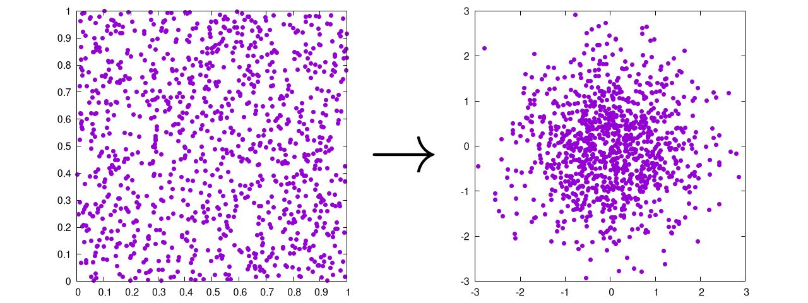
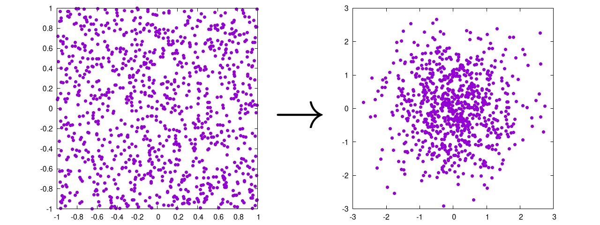
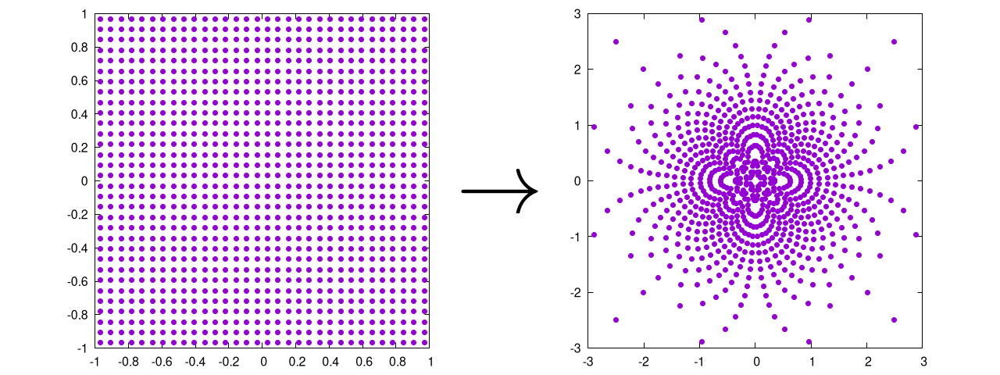

The Box—Muller Transform
The Box—Muller transform holds a special place in my heart as it was the first method I ever had to implement for my own research.
The purpose of this transformation is simple. It takes a uniform (probably random) distribution and turns it into a Gaussian one.

That's it.
It was originally developed by George Box (yes, Box is his last name) and Mervin Muller in 1958 and is one of the most common methods to create a random, Gaussian distribution of points [1]. It's particularly useful when initializing a set of particles for a physical, N-body simulation. This chapter will be divided into a few subsections:
- How to initialize the Box—Muller transform
- How to use the Box—Muller transform in Cartesian coordinates [2].
- How to use the Box—Muller transform in Polar Coordinates, also called the Marsaglia transform [3].
Of course, there will be full code examples at the bottom. So, let's get to it!
How to initialize the Box—Muller transform
The main thing to mention here is that the Box—Muller transform requires some form of uniform distribution as its input. One obvious way to initialize a random distribution of points is to start with a grid, like so:
function create_grid(n, endpoints)
grid_extents = endpoints[2] - endpoints[1]
# number of points along any given axis
# For 2D, we take the sqrt(n) and then round up
axis_num = ceil(Int, sqrt(n))
# we are now rounding n up to the nearest square if it was not already one
if sqrt(n) != axis_num
n = axis_num^2
end
# Distance between each point
dx = grid_extents / (axis_num)
# Initializing the array, particles along the column, dimensions along rows
a = zeros(n, 2)
# This loops over the relevant dimensions
for i = 1:axis_num
for j = 1:axis_num
a[(i - 1) * axis_num + j, :] .=
[(i - 0.5) * dx + endpoints[1],
(j - 0.5) * dx + endpoints[1]]
end
end
return a
This will create the following set of points for :

To be honest, there are a bunch of ways to generate this exact same distribution. Here, we simply walked backwards half of the grid size, determined the step size, and then placed a particle at each step. Note that there is an inherent limitation with this method in that it only works for a square numbers. Because of this, we decided to round up to the nearest square to make a nice grid. It's not the cleanest implementation, but the grid will mainly be used for debugging anyway, so it's OK to be a little messy here.
The real star of the show is the uniform random distribution, which can be generated like this:
function create_rand_dist(n, endpoints)
grid_extents = endpoints[2] - endpoints[1]
return(rand(n,2) * grid_extents .+ endpoints[1])
This will create the following set of points for :

OK, but how do we know this is uniform? Good question!
The easiest way is to plot a histogram of a super large number of points.
If the random distribution is uniform, then all the bins should be roughly the same value.
The more points we have, the smaller the percent difference between the bins will be.
Here is a set of images generated by rand() for , , and all in one dimension:
 |
 |
 |
It is clear that the case looks the most uniform. Note that for two dimensions, the same logic applies, but we need to create separate histograms for the and coordinates.
Once this test is complete, we can be fairly sure that the function we are using to generate the initial distribution is uniform and ready for the next step of the process: actually using the Box—Muller transform!
How to use the Box—Muller transform in Cartesian coordinates
The two dimensional Cartesian version of the Box—Muller transform starts with two random input values ( and ), both of which come from their own uniform distributions that are between and . It then creates two output points ( and ). For this, is used to create a Gaussian distribution along some radial value , and is used to spin that around a circle with some angular component , such that
Looking at these equations, seems to make a decent amount of sense. After all, angles typically vary from , and our input distribution varies from , so we can get some value between and by multiplying by one of our input values.
So what about ? Well, remember that if we want to be in a Gaussian form, then we might say something like, , so if we solve this for , we get .
From these values, we can calculate our new points as,
Finally, in order to specify the size and shape of the generated Gaussian distribution, we can use the standard deviation, , and the mean, , like so:
In general, this can be written in code like so:
# Box--Muller transform
function cartesian_box_muller(input_pts, sigma, mu)
r = sqrt(-2 * log(input_pts[1]))
theta = 2 * pi * input_pts[2]
return [sigma * r * cos(theta) + mu[1],
sigma * r * sin(theta) + mu[2]]
end
Which produces the following output

Note that we have written the code to work on a single set of input values, but it could also be written to read in the entire distribution of points all at once. As this particular technique is usually implemented in parallel, it's up to you to decided which is the fastest for your own individual use-case.
At this stage, we have a good idea of how the transform works, but some people shy away from the Cartesian method in practice and instead opt for the polar form, which will be discussed next!
How to use the Box—Muller transform in polar coordinates
The Cartesian form of the Box—Muller transform is relatively intuitive. The polar method is essentially the same, but without the costly and operations. In this case, we use the input values to create an initial radial point (to be scaled later):
This means that we are essentially trying to transform our set of values into a new input value . To do this, we need to start with a uniformly distributed circle, so we must reject any values for and where is either or . This also means that the initial distributions of and must range from .
From here, we can use basic trigonometric identities to redefine the and to be
This changes the output equations to be
Again, the final values are:
In code, it might look like this:
# Box--Muller transform
function polar_box_muller(input_pts, sigma, mu)
r_0 = input_pts[1]^2 + input_pts[2]^2
# this method is only valid for points within the unit circle
if r_0 == 0 || r_0 > 1
return [NaN, NaN]
end
return [sigma * input_pts[1] * sqrt(-2 * log(r_0) / r_0) + mu[1],
sigma * input_pts[2] * sqrt(-2 * log(r_0) / r_0) + mu[2]]
This will produce the following output:
 
Again, this is ultimately the same as the Cartesian method, except that it:
- Rejects points in the initial distribution that are outside of the unit circle (also called rejection sampling)
- Avoids costly and operations
Point 2 means that the polar method should be way faster than the Cartesian one, but rejection sampling is somewhat interesting in it's own right, which we have discussed in a separate chapter
Example Code
The example code here is straightforward: we start with a uniform distribution of points (both on a grid and a uniform random distribution) and then we preform the Box—Muller transform to see how far off it is from the Gaussian we expect.
using DelimitedFiles, LinearAlgebra
using Test
function create_grid(n, endpoints)
grid_extents = endpoints[2] - endpoints[1]
# number of points along any given axis
# For 2D, we take the sqrt(n) and then round up
axis_num = ceil(Int, sqrt(n))
# we are now rounding n up to the nearest square if it was not already one
if sqrt(n) != axis_num
n = axis_num^2
end
# Distance between each point
dx = grid_extents / (axis_num)
# Initializing the array, particles along the column, dimensions along rows
a = zeros(n, 2)
# This loops over the relevant dimensions
for i = 1:axis_num
for j = 1:axis_num
a[(i - 1) * axis_num + j, :] .=
[(i - 0.5) * dx + endpoints[1],
(j - 0.5) * dx + endpoints[1]]
end
end
return a
end
function create_rand_dist(n, endpoints)
grid_extents = endpoints[2] - endpoints[1]
return(rand(n,2) * grid_extents .+ endpoints[1])
end
# This function reads in a pair of input points and performs the Cartesian
# Box--Muller transform
function cartesian_box_muller(input_pts, sigma, mu)
r = sqrt(-2 * log(input_pts[1]))
theta = 2 * pi * input_pts[2]
return [sigma * r * cos(theta) + mu[1],
sigma * r * sin(theta) + mu[2]]
end
# This function reads in a pair of input points and performs the Cartesian
# Box--Muller transform
function polar_box_muller(input_pts, sigma, mu)
r_0 = input_pts[1]^2 + input_pts[2]^2
# this method is only valid for points within the unit circle
if r_0 == 0 || r_0 > 1
return [NaN, NaN]
end
return [sigma * input_pts[1] * sqrt(-2 * log(r_0) / r_0) + mu[1],
sigma * input_pts[2] * sqrt(-2 * log(r_0) / r_0) + mu[2]]
end
function is_gaussian(input_pts; bounds = [-1 1; -1 1], dx = 0.1,
sigma = 1, mu = [0,0], threshold = 0.1)
histogram = zeros(ceil(Int,(bounds[1,2]-bounds[1,1])/dx),
ceil(Int,(bounds[2,2]-bounds[2,1])/dx))
for i = 1:size(input_pts)[1]
input_x = input_pts[i, 1]
input_y = input_pts[i, 2]
if !(isnan(input_x) || isnan(input_y))
bin = CartesianIndex(ceil(Int, (input_x - bounds[1,1]) / dx),
ceil(Int, (input_y - bounds[2,1]) / dx))
if bin[1] <= size(histogram)[1] && bin[1] > 0 &&
bin[2] <= size(histogram)[2] && bin[2] > 0
histogram[bin] += 1
end
end
end
n = sum(histogram)
normalize!(histogram)
rms = 0
for i = 1:size(histogram)[1]
x = bounds[1,1] + i*dx
for j = 1:size(histogram)[2]
y = bounds[2,1] + j*dx
gaussian_value = exp(-(((x+mu[1])^2)/(2*sigma^2) +
((y+mu[2])^2)/(2*sigma^2)))
rms += (gaussian_value - histogram[i,j])^2
end
end
return sqrt(rms/n) < threshold
end
function main(n)
# This casts the input onto the nearest square for the cartesian grids
n = Int(ceil(sqrt(n))^2)
cartesian_grid = create_grid(n, [0,1])
polar_grid = create_grid(n, [-1,1])
cartesian_rand = create_rand_dist(n, [0,1])
polar_rand = create_rand_dist(n, [-1,1])
cartesian_grid_output = similar(cartesian_grid)
polar_grid_output = similar(polar_grid)
cartesian_rand_output = similar(cartesian_rand)
polar_rand_output = similar(polar_rand)
# going through each pair of points and using the x,y coordinates in
# their respective functions
for i = 1:size(cartesian_grid)[1]
cartesian_grid_output[i,:] .=
cartesian_box_muller(cartesian_grid[i,:], 1, [0,0])
polar_grid_output[i,:] .= polar_box_muller(polar_grid[i,:], 1, [0,0])
cartesian_rand_output[i,:] .=
cartesian_box_muller(cartesian_rand[i,:], 1, [0,0])
polar_rand_output[i,:] .= polar_box_muller(polar_rand[i,:], 1, [0,0])
end
@testset "histogram tests of Box--Muller Gaussianness" begin
@test is_gaussian(cartesian_grid_output;
bounds = [-3 3; -3 3], dx = 0.3,
sigma = 1, mu = [0,0])
@test is_gaussian(cartesian_rand_output;
bounds = [-3 3; -3 3], dx = 0.3,
sigma = 1, mu = [0,0])
@test is_gaussian(polar_grid_output;
bounds = [-3 3; -3 3], dx = 0.3,
sigma = 1, mu = [0,0])
@test is_gaussian(polar_rand_output;
bounds = [-3 3; -3 3], dx = 0.3,
sigma = 1, mu = [0,0])
end
writedlm("cartesian_grid_output.dat", cartesian_grid_output)
writedlm("polar_grid_output.dat", polar_grid_output)
writedlm("cartesian_rand_output.dat", cartesian_rand_output)
writedlm("polar_rand_output.dat", polar_rand_output)
writedlm("cartesian_grid.dat", cartesian_grid)
writedlm("polar_grid.dat", polar_grid)
writedlm("cartesian_rand.dat", cartesian_rand)
writedlm("polar_rand.dat", polar_rand)
end
Bibliography
License
Code Examples
The code examples are licensed under the MIT license (found in LICENSE.md).
Text
The text of this chapter was written by James Schloss and is licensed under the Creative Commons Attribution-ShareAlike 4.0 International License.

Images/Graphics
- The image "IFS triangle 1" was created by James Schloss and is licensed under the Creative Commons Attribution-ShareAlike 4.0 International License.
- The image "IFS square 3" was created by James Schloss and is licensed under the Creative Commons Attribution-ShareAlike 4.0 International License.
- The image "Simple Barnsley fern" was created by James Schloss and is licensed under the Creative Commons Attribution-ShareAlike 4.0 International License.
- The video "Affine random transform 0" was created by James Schloss and is licensed under the Creative Commons Attribution-ShareAlike 4.0 International License.
- The video "Affine random transform 1" was created by James Schloss and is licensed under the Creative Commons Attribution-ShareAlike 4.0 International License.
- The video "Affine random transform 2" was created by James Schloss and is licensed under the Creative Commons Attribution-ShareAlike 4.0 International License.
- The video "Affine random transform 3" was created by James Schloss and is licensed under the Creative Commons Attribution-ShareAlike 4.0 International License.
- The video "Affine fern transform 0" was created by James Schloss and is licensed under the Creative Commons Attribution-ShareAlike 4.0 International License.
- The video "Affine fern transform 1" was created by James Schloss and is licensed under the Creative Commons Attribution-ShareAlike 4.0 International License.
- The video "Affine fern transform 2" was created by James Schloss and is licensed under the Creative Commons Attribution-ShareAlike 4.0 International License.
- The video "Affine fern transform 3" was created by James Schloss and is licensed under the Creative Commons Attribution-ShareAlike 4.0 International License.
- The video "Fern twiddle 0" was created by James Schloss and is licensed under the Creative Commons Attribution-ShareAlike 4.0 International License.
- The video "Fern twiddle 1" was created by James Schloss and is licensed under the Creative Commons Attribution-ShareAlike 4.0 International License.
- The video "Fern twiddle 2" was created by James Schloss and is licensed under the Creative Commons Attribution-ShareAlike 4.0 International License.
- The video "Fern twiddle 3" was created by James Schloss and is licensed under the Creative Commons Attribution-ShareAlike 4.0 International License.
{kind=link}
{kind=link}
{kind=link}